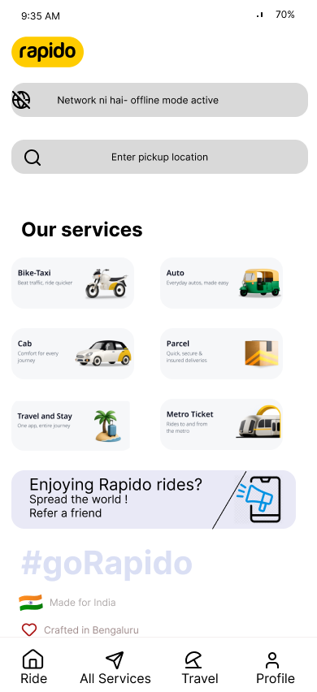

01 · INDEPENDENT PRODUCT CONCEPT

When the network disappears, the journey shouldn't
Rapido · No-Network Booking
How might a ride-booking product preserve continuity when internet connectivity is unreliable?
Problem Connectivity can interrupt a time-sensitive booking
Focus Continuity, fallback behaviour, trust and recovery